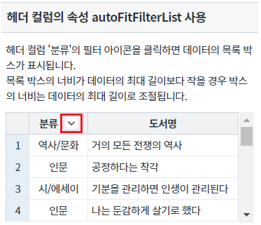
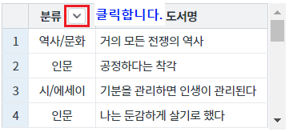
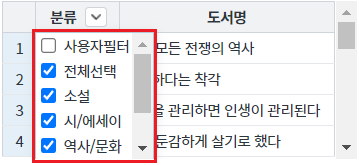
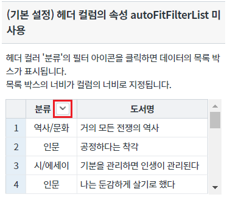
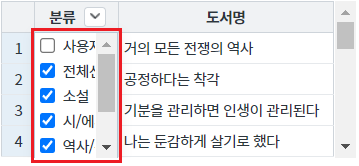
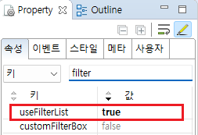
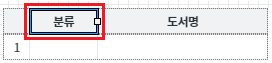
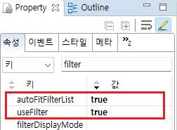
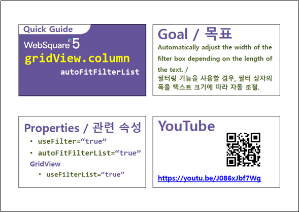

GridView의 헤더 컬럼의 속성 autoFitFilterList의 기능 예제입니다. 속성 autoFitFilterList은 헤더 컬럼에 데이터 필터를 리스트 형태로 지정하였을 때 동작하는 기능입니다.
아래는 설정 값 별 설명입니다. - false : (기본 설정 값) 목록 박스의 너비는 컬럼의 너비로 지정됩니다. - true : 필터 목록 박스의 최소 너비가가 데이터의 최대 길이로 지정됩니다. (목록 박스의 너비가 데이터의 최대 길이보자 작은 경우 적용)
헤더 컬럼의 속성 autoFitFilterList 사용
(기본 설정) 헤더 컬럼의 속성 autoFitFilterList 미사용
영역 [헤더 컬럼의 속성 autoFitFilterList 사용]의 GridView를 확인합니다.
헤더 컬럼 '분류'에 필터 목록 보기 아이콘이 있습니다.
[브라우저(Chrome) 실행 예시]

헤더 컬럼 '분류'에 필터 목록 보기 버튼을 클릭합니다.
[브라우저(Chrome) 실행 예시]

필터 목록 박스의 최소 너비가가 데이터의 최대 길이로 지정됩니다.
[브라우저(Chrome) 실행 예시]

영역 [(기본 설정) 헤더 컬럼의 속성 autoFitFilterList 미사용]의 GridView를 확인합니다.
헤더 컬럼 '분류'에 필터 목록 보기 아이콘이 있습니다.
[브라우저(Chrome) 실행 예시]

헤더 컬럼 '분류'에 필터 목록 보기 버튼을 클릭합니다.
[브라우저(Chrome) 실행 예시]
목록 박스의 너비는 컬럼의 너비로 지정됩니다.
[브라우저(Chrome) 실행 예시]

STEP1. GridView의 속성을 정의합니다.
[필수] useFilterList="true" //[default: false, true] 필터 대상 값을 목록으로 표시.
그림 1.웹스퀘어5 SP5 스튜디오의 Property View(속성창) 예시

STEP2. GridView의 헤더 컬럼의 속성을 정의합니다.
[필수] useFilter="true" //필터 기능 사용
[필수] autoFitFilterList="true" //필터 목록 박스의 너비를 데이터의 최대 길이로 자동 조절 기능 사용
그림 2.웹스퀘어5 SP5 스튜디오의 Design 탭 예시 - 헤더 컬럼 선택

그림 3.웹스퀘어5 SP5 스튜디오의 Property View(속성창) 예시 - 헤더 컬럼

[소스 코드 예시]
<!-- gridView 의 소스 본문 예시 --> <w2:gridView useFilterList="true" dataList="data:dlt_books_1" style="height:100px;"> <!-- 중략 --> <w2:header id="header1" style=""> <w2:row id="row1" style=""> <w2:column useFilter="true" autoFitFilterList="true" value="분류" width="68" id="column2" inputType="text"> </w2:column> <!-- 중략 --> </w2:row> </w2:header> <!-- 중략 --> </w2:gridView>
useFilterList
[header column] useFilter
[header column] autoFitFilterList
[웹스퀘어5 SP5 개발 가이드] GridView
링크 : https://docs1.inswave.com/sp5_user_guide/bc10c1b82c9a2a0b#e1c4658baf7e726f
[웹스퀘어5 SP5 개발 가이드] GridView 필터링
링크 : https://docs1.inswave.com/sp5_user_guide/86bdcf48029b958b#6842af3d03705a2b
[웹스퀘어5 SP5 개발 가이드] GridView 필터 상자 폭 자동 맞춤
링크 : https://docs1.inswave.com/sp5_user_guide/86bdcf48029b958b#0060af0faa8b7096
[예제 가이드] [GridView] 필터 사용 설정하기
온라인 예제 링크 : https://example.websquare.kr/link.html?p=P00099
GridView 필터 상자 폭 자동 맞춤
링크 : https://youtu.be/J086xJbf7Wg
